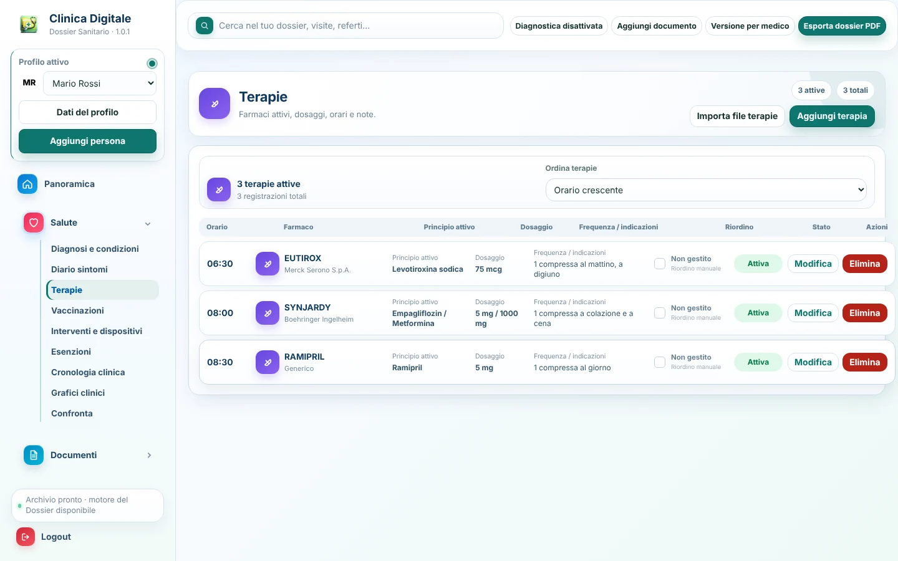
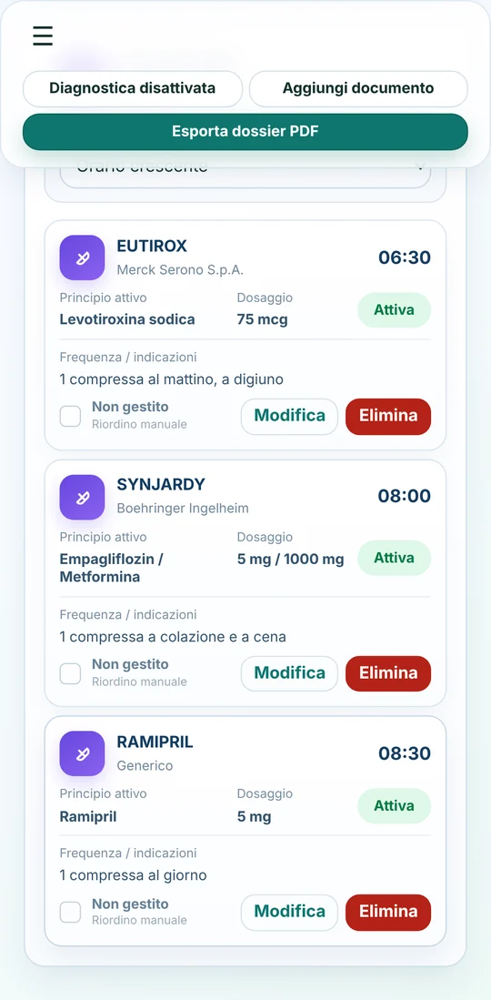
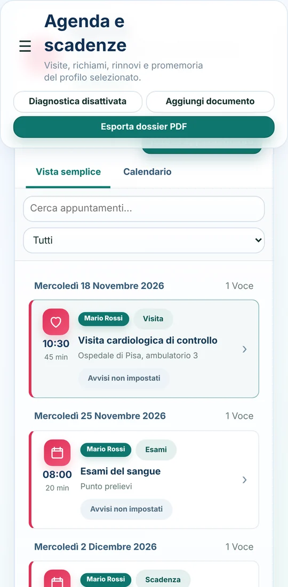
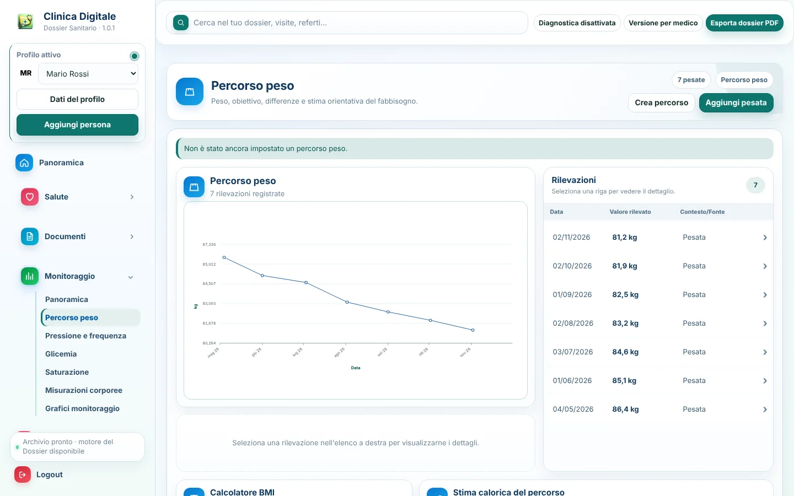

Lettura automatica
PDF e foto vengono letti: il Dossier riconosce data, struttura, valori degli esami, farmaci e diagnosi.
Raccoglie, ordina e rende consultabili le informazioni sanitarie tue e della tua famiglia, senza trasformarsi in un sistema complicato da usare.

Carichi un referto e il Dossier fa il resto, conservando sempre l'originale.
PDF e foto vengono letti: il Dossier riconosce data, struttura, valori degli esami, farmaci e diagnosi.
Referti, esami, immagini e documenti in un archivio ordinato, con l'originale sempre a portata di mano.
Le immagini di radiologia si conservano nel Dossier e si aprono quando servono, anche dal telefono.
Trovi in un attimo un esame, una visita o un valore cercando una parola.
Orari dei farmaci, scorte, ricette da rinnovare, visite ed esami: tutto in un posto, con i promemoria giusti.


Le informazioni importanti sempre aggiornate, per te e per chi ti cura.
Il quadro clinico principale, con le esenzioni e le loro scadenze.
I farmaci in corso e quelli passati, con principio attivo e indicazioni.
Peso, pressione, glicemia, saturazione e misurazioni corporee nel tempo.
Visite, esami e referti in ordine di data, dal più recente.
Un riepilogo ordinato da mostrare o esportare in PDF prima di una visita.
Allergie, terapie critiche, gruppo sanguigno e contatti da vedere subito.
Un profilo per ogni persona, ognuno con il suo accesso e i suoi permessi.
Copia di sicurezza cifrata e allineamento automatico tra i dispositivi.

Bastano pochi minuti per iniziare. Il piano personale è gratuito.
Inizia gratis